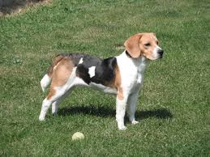

Los beagle son una raza de perros de tamaño pequeño a mediano. Tienen un aspecto similar al foxhound, pero de menor tamaño, con patas más cortas y orejas más largas y suaves. Este perro, clasificado en el grupo 6 por la Federación Cinológica Internacional,
es un sabueso utilizado principalmente para rastrear liebres, conejos y otras piezas de caza. Su gran capacidad olfativa e instinto de rastreo hace que se utilicen como perros de detección de importaciones agrícolas prohibidas y productos alimenticios
en cuarentena a lo largo de todo el mundo. Son animales inteligentes, y populares como animales domésticos debido a su talla, carácter tranquilo y carencia de problemas de salud congénitos. Estas características también hacen de ellos una opción
como sujeto de experimentación in vivo.
APARIENCIA

BEAGLE en el campo
Su aspecto general es similar al de un foxhound de tamaño pequeño, pero la cabeza es más amplia, el hocico más corto, la expresión completamente diferente y las piernas más cortas en relación con el cuerpo. Tienen una altura de entre 33 y 41 cm hasta
la cruz y pesan entre 8 y 16 kg; las hembras son por lo general ligeramente más pequeñas que los machos
El beagle tiene un cuerpo musculoso y una talla media; es de constitución cuadrada: la longitud desde el pecho hasta las piernas es casi igual a la altura desde el suelo hasta la cruz. Su pelaje es liso, corto, denso y resistente a los cambios climatológicos
bruscos. Los hombros se encuentran echados hacia atrás y no muy cargados; las patas tienen nudillos prominentes, almohadillas plantares resistentes y uñas cortas; las delanteras son rectas y aplomadas y las traseras son musculosas y dobladas en
la articulación superior.
TEMPERAMENTO
Es un perro apacible, tanto en su carácter como en su disposición. Descrito en varios estándares de raza como «alegre» (merry), son afectuosos y generalmente no son agresivos, pero tampoco tímidos. Disfrutan de la compañía y, aunque puedan mostrarse
inicialmente fríos con los extraños, los aceptan con facilidad, lo que hace de ellos unos perros guardianes poco adecuados, aunque su tendencia a ladrar o aullar cuando avistan desconocidos los convierta en posibles perros de vigilancia
Los beagles son inteligentes pero, al ser una raza criada para largas persecuciones, son decididos y resueltos, lo que puede hacerlos difíciles de entrenar. Son generalmente obedientes, pero puede ser difícil hacerles retroceder una vez que han percibido
un rastro, y pueden distraerse con facilidad por olores a su alrededor.
Estos perros tienen un excelente comportamiento con los niños, y quizás este sea uno de los motivos por los que es uno de los animales domésticos más populares en las familias, pero son animales de jauría y pueden ser propensos a la llamada «ansiedad
por separación»
SALUD
La longevidad típica de los beagles es de entre diez y quince años,una esperanza de vida habitual para los perros de su talla.